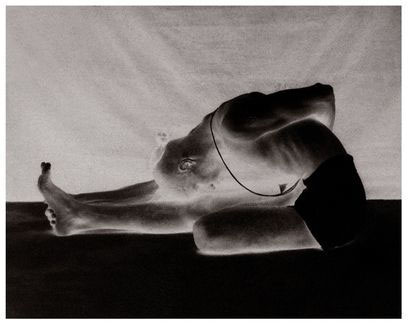
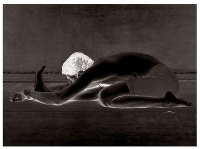
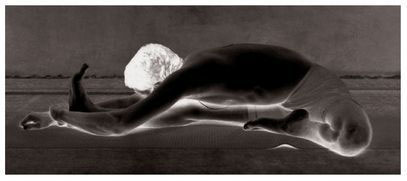
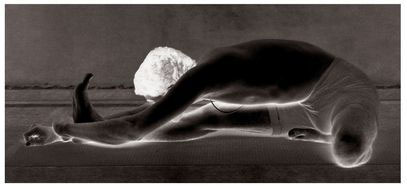
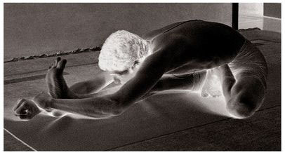

14. TIRIANGMUKHAIKAPADA PASCHIMATTANASANA
This asana has twenty-two vinyasas, with the 8th and 15th vinyasas constituting its states. The methods of vinyasa are the same as those for Ardha Baddha Padma Paschimattanasana. Indeed, the method of inhaling and exhaling for each vinyasa follows the same pattern throughout the asanas.
ARDHA BADDHA PADMA PASCHIMATTANASANA

TIRIANGMUKHAIKAPADA PASCHIMATTANASANA

METHOD
Begin by doing the first six vinyasas of the first Surya Namaskara. At the 7th vinyasa, jump through the arms, sit as described in Paschimattanasana, stretch the left leg out, fold the right leg back, placing the right foot by the side of the thigh, join the knees together, take hold with both hands of the left foot, which is at a right angle to the floor, lift the head and chest up fully, and do puraka; this constitutes the 7th vinyasa. Then, doing rechaka slowly, place the forehead on the outstretched leg, and do puraka and rechaka as much as possible; this is the 8th vinyasa. Next, doing puraka slowly, lift the head only; this is the 9th vinyasa. Then, do the 11th vinyasa described in Paschimattanasana; this forms the 10th vinyasa. The next three vinyasas, namely the 11th, 12th, and 13th, follow the 4th, 5th, and 6th vinyasas of the first Surya Namaskara. Then, while again sitting in the 7th vinyasa of Paschimattanasana, stretch out the right leg, fold back the left leg in the same manner as the right leg above, take hold of the right foot with both hands, and lift the head and chest up, doing puraka; this constitutes the 14th vinyasa. Then, doing rechaka slowly, place the forehead on the outstretched knee, and do puraka and rechaka as much as possible; this is the 15th vinyasa. Then, doing puraka slowly, lift up only the head; this is the 16th vinyasa. Next, the 17th vinyasa follows the method of the 10th vinyasa; the 18th vinyasa follows that of the 4th; the 19th follows that of the 5th; the 20th follows that of the 6th; the 21st follows that of the 3rd; and the 22nd vinyasa follows the method of the 2nd vinyasa of Paschimattanasana.
BENEFITS
Tiriangmukhaikapada Paschimattanasana cures a number of afflictions, including: body fat; water retention; thighs swollen out of proportion to the size of the body (elephant leg); piles; and sciatica. It also makes the body symmetrical. However, aspirants should not forget to do rechaka and puraka slowly and as much as possible, while in the state of this asana.
JANU SHIRSHASANA (A)

JANU SHIRSHASANA (B)

JANU SHIRSHASANA (C)

ASPIRANTS SHOULD NOTE THAT, THROUGH THE 6TH VINYASA OF THE FIRST Surya Namaskara, the opening vinyasas are the same for all the asanas. In addition, all asanas conclude with uth pluthi [lifting up off the floor with the strength of the arms], and then a jump back into the 4th vinyasa of the Surya Namaskara, followed by the 5th, 6th, 7th, and 8th vinyasas. Aspirants should know the methods for doing these vinyasas, as well as for rechaka and puraka. From this point on, I will describe only the vinyasas, the state, and the benefits of an individual asana. Readers and aspirants should learn these fully, which is best done under the guidance of a Guru. (To see the state of an asana, consult its figure.)